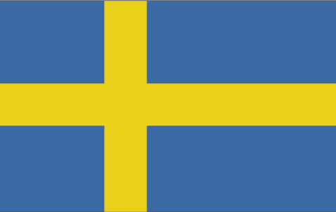
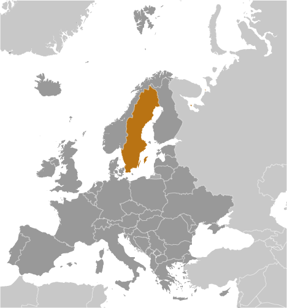
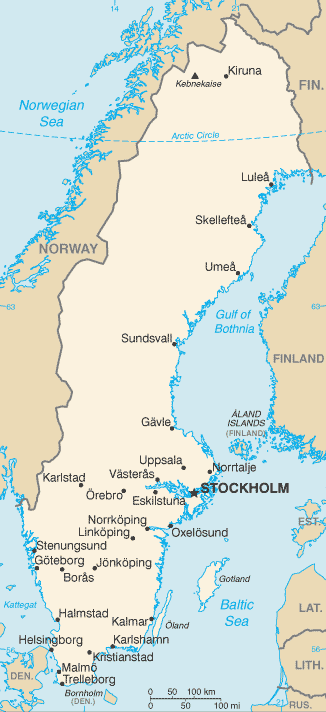

Europe :: SWEDEN
Introduction :: SWEDEN
-
A military power during the 17th century, Sweden has not participated in any war for two centuries. An armed neutrality was preserved in both world wars. Sweden's long-successful economic formula of a capitalist system intermixed with substantial welfare elements was challenged in the 1990s by high unemployment and in 2000-02 and 2009 by the global economic downturns, but fiscal discipline over the past several years has allowed the country to weather economic vagaries. Sweden joined the EU in 1995, but the public rejected the introduction of the euro in a 2003 referendum.
Geography :: SWEDEN
-
Northern Europe, bordering the Baltic Sea, Gulf of Bothnia, Kattegat, and Skagerrak, between Finland and Norway62 00 N, 15 00 EEuropetotal: 450,295 sq kmland: 410,335 sq kmwater: 39,960 sq kmcountry comparison to the world: 57almost three times the size of Georgia; slightly larger than Californiatotal: 2,211 kmborder countries (2): Finland 545 km, Norway 1,666 km3,218 kmterritorial sea: 12 nm (adjustments made to return a portion of straits to high seas)exclusive economic zone: agreed boundaries or midlinescontinental shelf: 200-m depth or to the depth of exploitationtemperate in south with cold, cloudy winters and cool, partly cloudy summers; subarctic in northmostly flat or gently rolling lowlands; mountains in westmean elevation: 320 melevation extremes: lowest point: reclaimed bay of Lake Hammarsjon, near Kristianstad -2.4 mhighest point: Kebnekaise 2,111 miron ore, copper, lead, zinc, gold, silver, tungsten, uranium, arsenic, feldspar, timber, hydropoweragricultural land: 7.5%arable land 6.4%; permanent crops 0%; permanent pasture 1.1%forest: 68.7%other: 23.8% (2011 est.)1,640 sq km (2012)most Swedes live in the south where the climate is milder and there is better connectivity to mainland Europe; population clusters are found all along the Baltic coast in the east; the interior areas of the north remain sparsely populatedice floes in the surrounding waters, especially in the Gulf of Bothnia, can interfere with maritime trafficacid rain damage to soils and lakes; pollution of the North Sea and the Baltic Seaparty to: Air Pollution, Air Pollution-Nitrogen Oxides, Air Pollution-Persistent Organic Pollutants, Air Pollution-Sulfur 85, Air Pollution-Sulfur 94, Air Pollution-Volatile Organic Compounds, Antarctic-Environmental Protocol, Antarctic-Marine Living Resources, Antarctic Treaty, Biodiversity, Climate Change, Climate Change-Kyoto Protocol, Desertification, Endangered Species, Environmental Modification, Hazardous Wastes, Law of the Sea, Marine Dumping, Ozone Layer Protection, Ship Pollution, Tropical Timber 83, Tropical Timber 94, Wetlands, Whalingsigned, but not ratified: none of the selected agreementsstrategic location along Danish Straits linking Baltic and North Seas; Sweden has almost 100,000 lakes, the largest of which, Vanern, is the third largest in Europe
People and Society :: SWEDEN
-
9,960,487 (July 2017 est.)country comparison to the world: 91noun: Swede(s)adjective: Swedishindigenous population: Swedes with Finnish and Sami minorities; most common countries of origin among immigrants: Finland, Syria, Iraq, Poland, IranSwedish (official)note: Finnish, Sami, Romani, Yiddish, and Meankieli are official minority languagesChurch of Sweden (Lutheran) 63%, other (includes Roman Catholic, Orthodox, Baptist, Muslim, Jewish, and Buddhist) 17% (2016 est.)0-14 years: 17.43% (male 892,462/female 843,375)15-24 years: 11.31% (male 581,025/female 545,971)25-54 years: 39.42% (male 1,993,590/female 1,933,080)55-64 years: 11.58% (male 578,942/female 574,479)65 years and over: 20.26% (male 931,593/female 1,085,970) (2017 est.)total dependency ratio: 58.5youth dependency ratio: 27.4elderly dependency ratio: 31.1potential support ratio: 3.2 (2015 est.)total: 41.2 yearsmale: 40.2 yearsfemale: 42.2 years (2017 est.)country comparison to the world: 380.81% (2017 est.)country comparison to the world: 13112.1 births/1,000 population (2017 est.)country comparison to the world: 1679.4 deaths/1,000 population (2017 est.)country comparison to the world: 575.3 migrant(s)/1,000 population (2017 est.)country comparison to the world: 24most Swedes live in the south where the climate is milder and there is better connectivity to mainland Europe; population clusters are found all along the Baltic coast in the east; the interior areas of the north remain sparsely populatedurban population: 86.1% of total population (2017)rate of urbanization: 0.86% annual rate of change (2015-20 est.)STOCKHOLM (capital) 1.486 million (2015)at birth: 1.06 male(s)/female0-14 years: 1.06 male(s)/female15-24 years: 1.06 male(s)/female25-54 years: 1.03 male(s)/female55-64 years: 1.01 male(s)/female65 years and over: 0.85 male(s)/femaletotal population: 1 male(s)/female (2016 est.)29.1 years (2015 est.)4 deaths/100,000 live births (2015 est.)country comparison to the world: 177total: 2.6 deaths/1,000 live birthsmale: 2.9 deaths/1,000 live birthsfemale: 2.3 deaths/1,000 live births (2017 est.)country comparison to the world: 218total population: 82.1 yearsmale: 80.2 yearsfemale: 84.2 years (2017 est.)country comparison to the world: 161.88 children born/woman (2017 est.)country comparison to the world: 14111.9% of GDP (2014)country comparison to the world: 64.11 physicians/1,000 population (2013)2.54 beds/1,000 population (2014)improved:urban: 100% of populationrural: 100% of populationtotal: 100% of populationunimproved:urban: 0% of populationrural: 0% of populationtotal: 0% of population (2015 est.)improved:urban: 99.3% of populationrural: 99.6% of populationtotal: 99.3% of populationunimproved:urban: 0.7% of populationrural: 0.4% of populationtotal: 0.7% of population (2015 est.)0.2% (2016 est.)country comparison to the world: 9811,000 (2016 est.)country comparison to the world: 92<100 (2016 est.)20.6% (2016)country comparison to the world: 977.7% of GDP (2013)country comparison to the world: 20total: 18 yearsmale: 17 yearsfemale: 20 years (2014)total: 20.4%male: 21.2%female: 19.6% (2015 est.)country comparison to the world: 40
Government :: SWEDEN
-
conventional long form: Kingdom of Swedenconventional short form: Swedenlocal long form: Konungariket Sverigelocal short form: Sverigeetymology: name ultimately derives from the North Germanic Svear tribe, which inhabited central Sweden and is first mentioned in the first centuries A.D.parliamentary constitutional monarchyname: Stockholmgeographic coordinates: 59 20 N, 18 03 Etime difference: UTC+1 (6 hours ahead of Washington, DC, during Standard Time)daylight saving time: +1hr, begins last Sunday in March; ends last Sunday in October21 counties (lan, singular and plural); Blekinge, Dalarna, Gavleborg, Gotland, Halland, Jamtland, Jonkoping, Kalmar, Kronoberg, Norrbotten, Orebro, Ostergotland, Skane, Sodermanland, Stockholm, Uppsala, Varmland, Vasterbotten, Vasternorrland, Vastmanland, Vastra Gotaland6 June 1523 (Gustav VASA elected king of Sweden, marking the abolishment of the Kalmar Union between Denmark, Norway, and Sweden)National Day, 6 June (1983); note - from 1916 to 1982 this date was celebrated as Swedish Flag Dayhistory: several previous; latest adopted 1 January 1975amendments: proposed by Parliament; passage requires simple majority vote in two consecutive parliamentary terms with an intervening general election; passage also requires approval by simple majority vote in a referendum if Parliament approves a motion for a referendum by one-third of its members; amended several times, last in 2014 (changes to the "Instrument of Government") (2016)civil law system influenced by Roman-Germanic law and customary lawaccepts compulsory ICJ jurisdiction with reservations; accepts ICCt jurisdictioncitizenship by birth: nocitizenship by descent only: the father must be a citizen of Sweden; in the case of a child born out of wedlock, the mother must be a citizen of Sweden and the father unknowndual citizenship recognized: no, unless the other citizenship was acquired involuntarilyresidency requirement for naturalization: 5 years18 years of age; universalchief of state: King CARL XVI GUSTAF (since 19 September 1973); Heir Apparent Princess VICTORIA Ingrid Alice Desiree, daughter of the monarch (born 14 July 1977)head of government: Prime Minister Stefan LOFVEN (since 3 October 2014); Deputy Prime Minister Isabella LOVIN (since 25 May 2016)cabinet: Cabinet appointed by the prime ministerelections/appointments: the monarchy is hereditary; following legislative elections, the leader of the majority party or majority coalition usually becomes the prime ministerdescription: unicameral Parliament or Riksdag (349 seats; 310 members directly elected in multi-seat constituencies by proportional representation vote and 39 members in "at-large" seats directly elected by proportional representation vote; members serve 4-year terms)elections: last held on 14 September 2014 (next to be held on or before 9 September 2018)election results: percent of vote by party - SAP 31.0%, M 23.3%, SD 12.9%, MP 6.9%, C 6.1%, V 5.7%, L 5.4%, KD 4.6%, other 4.1%; seats by party - SAP 113, M 84, SD 49, MP 25, C 22, V 21, L 19, KD 16highest court(s): Supreme Court of Sweden (consists of 16 justices including the court chairman); Supreme Administrative Court (consists of 18 justices including the court president)judge selection and term of office: Supreme Court and Supreme Administrative Court justices nominated by the Board of Judges, a 9-member nominating body consisting of high-level judges, prosecutors, and members of Parliament; justices appointed by the Government; following a probationary period, justices' appointments are permanentsubordinate courts: first instance, appellate, general, and administrative courts; specialized courts that handle cases such as land and environment, immigration, labor, markets, and patentsCenter Party (Centerpartiet) or C [Annie LOOF]Christian Democrats (Kristdemokraterna) or KD [Ebba Busch THOR]Green Party (Miljopartiet de Grona) or MP [Isabella LOVIN and Gustav FRIDOLIN]Left Party (Vansterpartiet) or V [Jonas SJOSTEDT]Liberal Party (Liberalerna) or L [Jan BJORKLUND]Moderate Party (Moderaterna) or M [Ulf KRISTERSSON]Swedish Social Democratic Party (Socialdemokraterna) or SAP [Stefan LOFVEN]Sweden Democrats (Sverigedemokraterna) or SD [Jimmie AKESSON]Confederation of Swedish Enterprise (Svenskt Naringsliv) [Carola LEMNE]Swedish Confederation of Professional Associations or SACO [Goran ARRIUS]Swedish Confederation of Professional Employees or TCO [Eva NORDMARK]Swedish Trade Union Confederation (Landsorganisationen) or LO [Karl-Petter THORWALDSSON]other: environmental groups; mediaADB (nonregional member), AfDB (nonregional member), Arctic Council, Australia Group, BIS, CBSS, CD, CE, CERN, EAPC, EBRD, ECB, EIB, EITI (implementing country), EMU, ESA, EU, FAO, FATF, G-9, G-10, IADB, IAEA, IBRD, ICAO, ICC (national committees), ICCt, ICRM, IDA, IEA, IFAD, IFC, IFRCS, IGAD (partners), IHO, ILO, IMF, IMO, IMSO, Interpol, IOC, IOM, IPU, ISO, ITSO, ITU, ITUC (NGOs), MIGA, MINUSMA, MONUSCO, NC, NEA, NIB, NSG, OAS (observer), OECD, OPCW, OSCE, Paris Club, PCA, PFP, Schengen Convention, UN, UN Security Council (temporary), UNCTAD, UNESCO, UNHCR, UNIDO, UNMISS, UNMOGIP, UNRWA, UNTSO, UPU, WCO, WFTU (NGOs), WHO, WIPO, WMO, WTO, ZCchief of mission: Ambassador Karin Ulrika OLOFSDOTTER (since 17 September 2017)chancery: The House of Sweden, 2900 K Street NW, Washington, DC 20007telephone: [1] (202) 467-2600FAX: [1] (202) 467-2699consulate(s) general: New Yorkchief of mission: Ambassador (vacant); Charge d'Affaires David E. LINDWALL (since 20 January 2017)embassy: Dag Hammarskjolds Vag 31, SE-11589 Stockholmmailing address: American Embassy Stockholm, US Department of State, 5750 Stockholm Place, Washington, DC 20521-5750telephone: [46] (08) 783 53 00FAX: [46] (08) 661 19 64blue with a golden yellow cross extending to the edges of the flag; the vertical part of the cross is shifted to the hoist side in the style of the Dannebrog (Danish flag); the colors reflect those of the Swedish coat of arms - three gold crowns on a blue fieldthree crowns, lion; national colors: blue, yellowname: "Du Gamla, Du Fria" (Thou Ancient, Thou Free)lyrics/music: Richard DYBECK/traditionalnote: in use since 1844; also known as "Sang till Norden" (Song of the North), is based on a Swedish folk tune; it has never been officially adopted by the government; "Kungssangen" (The King's Song) serves as the royal anthem and is played in the presence of the royal family and during certain state ceremonies
Economy :: SWEDEN
-
Sweden has achieved an enviable standard of living with its combination of free-market capitalism and extensive welfare benefits. Sweden remains outside the euro zone largely out of concern that joining the European Economic and Monetary Union would diminish the country’s sovereignty over its welfare system. Timber, hydropower, and iron ore constitute the resource base of an economy heavily oriented toward foreign trade.Sweden’s economy experienced modest growth in 2014-16, with real GDP growth above 2%, but continues to struggle with deflationary pressure.$497.4 billion (2016 est.)$476 billion (2015 est.)$452.4 billion (2014 est.)note: data are in 2016 dollarscountry comparison to the world: 39$511 billion (2016 est.)3.2% (2016 est.)4.1% (2015 est.)2.6% (2014 est.)country comparison to the world: 86$49,800 (2016 est.)$48,900 (2015 est.)$47,500 (2014 est.)note: data are in 2016 dollarscountry comparison to the world: 2629.2% of GDP (2016 est.)28.9% of GDP (2015 est.)28% of GDP (2014 est.)country comparison to the world: 28household consumption: 44.6%government consumption: 26.2%investment in fixed capital: 24%investment in inventories: 0.6%exports of goods and services: 44.3%imports of goods and services: -39.7% (2016 est.)agriculture: 1.6%industry: 33.2%services: 65.2% (2016 est.)barley, wheat, sugar beets; meat, milkiron and steel, precision equipment (bearings, radio and telephone parts, armaments), wood pulp and paper products, processed foods, motor vehicles1.4% (2016 est.)country comparison to the world: 1315.276 million (2016 est.)country comparison to the world: 78agriculture: 2%industry: 12%services: 86% (2014 est.)7% (2016 est.)7.4% (2015 est.)country comparison to the world: 9215% (2014 est.)lowest 10%: 3.4%highest 10%: 24% (2012)24.9 (2013)25 (1992)country comparison to the world: 145revenues: $261 billionexpenditures: $256.2 billion (2016 est.)51% of GDP (2016 est.)country comparison to the world: 140.9% of GDP (2016 est.)country comparison to the world: 2741.7% of GDP (2016 est.)43.9% of GDP (2015 est.)note: data cover general government debt, and includes debt instruments issued (or owned) by government entities other than the treasury; the data include treasury debt held by foreign entities; the data include debt issued by subnational entities, as well as intra-governmental debt; intra-governmental debt consists of treasury borrowings from surpluses in the social funds, such as for retirement, medical care, and unemployment; debt instruments for the social funds are not sold at public auctionscountry comparison to the world: 129calendar year1.1% (2016 est.)0% (2015 est.)country comparison to the world: 89-0.5% (31 December 2016)-0.35% (31 December 2015)note:: the Discount rate was abolished in 2002, and replaced by a "Reference rate" with no bearing on monetary policy; the rate quoted here is the Reference ratecountry comparison to the world: 1601.85% (31 December 2016 est.)1.97% (31 December 2015 est.)country comparison to the world: 179$273.5 billion (31 December 2016 est.)$271.4 billion (31 December 2015 est.)country comparison to the world: 17$321.3 billion (31 December 2016 est.)$323 billion (31 December 2015 est.)country comparison to the world: 32$748.6 billion (31 December 2016 est.)$749.4 billion (31 December 2015 est.)country comparison to the world: 19$560.5 billion (31 December 2012 est.)$470.1 billion (31 December 2011 est.)$581.2 billion (31 December 2010 est.)country comparison to the world: 21$23.07 billion (2016 est.)$23.28 billion (2015 est.)country comparison to the world: 15$151.4 billion (2016 est.)$152.1 billion (2015 est.)country comparison to the world: 30machinery 35%, motor vehicles, paper products, pulp and wood, iron and steel products, chemicals (2012 est.)Germany 10.6%, Norway 10.4%, US 7.3%, Denmark 7%, Finland 6.8%, UK 6%, Netherlands 5.4%, Belgium 4.7%, France 4.4% (2016)$139.9 billion (2016 est.)$138.5 billion (2015 est.)country comparison to the world: 29machinery, petroleum and petroleum products, chemicals, motor vehicles, iron and steel; foodstuffs, clothingGermany 18.8%, Netherlands 8.2%, Norway 7.8%, Denmark 7.6%, China 5.6%, UK 5.2%, Belgium 4.6%, Finland 4.5%, France 4.1% (2016)$59.39 billion (31 December 2016 est.)$58.11 billion (31 December 2015 est.)country comparison to the world: 36$939.9 billion (31 March 2016 est.)$929.4 billion (31 March 2015 est.)country comparison to the world: 17$390.5 billion (31 December 2016 est.)$412 billion (31 December 2015 est.)country comparison to the world: 20$479.3 billion (31 December 2016 est.)$483.8 billion (31 December 2015 est.)country comparison to the world: 17Swedish kronor (SEK) per US dollar -8.5605 (2016 est.)8.5605 (2015 est.)8.4335 (2014 est.)6.8612 (2013 est.)6.77 (2012 est.)
Energy :: SWEDEN
-
electrification - total population: 100% (2016)154.3 billion kWh (2015 est.)country comparison to the world: 25125.4 billion kWh (2015 est.)country comparison to the world: 3026.02 billion kWh (2016 est.)country comparison to the world: 714.29 billion kWh (2016 est.)country comparison to the world: 1739.67 million kW (2015 est.)country comparison to the world: 266.3% of total installed capacity (2015 est.)country comparison to the world: 20324.3% of total installed capacity (2015 est.)country comparison to the world: 540.9% of total installed capacity (2015 est.)country comparison to the world: 5030% of total installed capacity (2015 est.)country comparison to the world: 130 bbl/day (2016 est.)country comparison to the world: 1970 bbl/day (2016 est.)country comparison to the world: 194393,900 bbl/day (2016 est.)country comparison to the world: 240 bbl (1 January 2017 es)country comparison to the world: 196418,700 bbl/day (2016 est.)country comparison to the world: 38320,200 bbl/day (2016 est.)country comparison to the world: 42336,300 bbl/day (2016 est.)country comparison to the world: 25220,300 bbl/day (2016 est.)country comparison to the world: 300 cu m (2015 est.)country comparison to the world: 1991.25 billion cu m (2015 est.)country comparison to the world: 940 cu m (2015 est.)country comparison to the world: 187812 million cu m (2015 est.)country comparison to the world: 630 cu m (1 January 2014 es)country comparison to the world: 19762 million Mt (2015 est.)country comparison to the world: 55
Communications :: SWEDEN
-
total subscriptions: 3,328,371subscriptions per 100 inhabitants: 34 (July 2016 est.)country comparison to the world: 43total: 12,362,191subscriptions per 100 inhabitants: 125 (July 2016 est.)country comparison to the world: 75general assessment: highly developed telecommunications infrastructure; ranked among leading countries for fixed-line, mobile-cellular, Internet, and broadband penetrationdomestic: coaxial and multiconductor cables carry most of the voice traffic; parallel microwave radio relay systems carry some additional telephone channelsinternational: country code - 46; submarine cables provide links to other Nordic countries and Europe; satellite earth stations - 1 Intelsat (Atlantic Ocean), 1 Eutelsat, and 1 Inmarsat (Atlantic and Indian Ocean regions); note - Sweden shares the Inmarsat earth station with the other Nordic countries (Denmark, Finland, Iceland, and Norway) (2016)publicly owned TV broadcaster operates 2 terrestrial networks plus regional stations; multiple privately owned TV broadcasters operating nationally, regionally, and locally; about 50 local TV stations; widespread access to pan-Nordic and international broadcasters through multi-channel cable and satellite TV; publicly owned radio broadcaster operates 3 national stations and a network of 25 regional channels; roughly 100 privately owned local radio stations with some consolidating into near national networks; an estimated 900 community and neighborhood radio stations broadcast intermittently (2008).setotal: 9,041,427percent of population: 91.5% (July 2016 est.)country comparison to the world: 47
Transportation :: SWEDEN
-
number of registered air carriers: 8inventory of registered aircraft operated by air carriers: 219annual passenger traffic on registered air carriers: 11,623,930annual freight traffic on registered air carriers: 0 mt-km (2015)SE (2016)231 (2013)country comparison to the world: 25total: 149over 3,047 m: 32,438 to 3,047 m: 121,524 to 2,437 m: 75914 to 1,523 m: 22under 914 m: 37 (2013)total: 82914 to 1,523 m: 5under 914 m: 77 (2013)2 (2013)gas 1,626 km (2013)total: 14,127 kmstandard gauge: 14,062 km 1.435-m gauge (12,322 km electrified)narrow gauge: 65 km 0.891-m gauge (65 km electrified) (2016)country comparison to the world: 21total: 573,134 km (includes 2,050 km of expressways)paved: 140,100 kmunpaved: 433,034 kmnote: includes 98,500 km of state roads, 433,034 km of private roads, and 41,600 km of municipal roads (2016)country comparison to the world: 132,052 km (2010)country comparison to the world: 40total: 190by type: bulk carrier 7, general dry cargo 8, anti-pollution vessel 1, cable layer 2, dredge 2, ice 6, inspection 7, survey 6, training 4, tug 11, multi-purpose 1, passenger/ferry 26, ro-pax 38, ro-ro 29, ro-ro/container 4, tanker (ej gas) 37, tanker (LNG) 1foreign: 275 (Bahamas 7, Barbados 3, Bermuda 20, Cayman Islands 1, Cook Islands 2, Cyprus 14, Danish Int’l 20, Denmark 2, Faeroe Islands 19, Finland 2, France 1, Germany 5, Gibraltar 19, Italy 1, Latvia 1, Liberia 10, Madeira 11, Malaysia 1, Malta 6, Marshall Islands 7, Netherlands 35, Norway 2, Norwegian International 25, Panama 3, Russia 2, Singapore 16, Spain 2, St. Kitts and Nevis 1, St. Vincent and the Grenadines 11, Tanzania 1, Togo 1, UK 24) (2015)country comparison to the world: 35major seaport(s): Brofjorden, Goteborg, Helsingborg, Karlshamn, Lulea, Malmo, Stockholm, Trelleborg, VisbyLNG terminal(s) (import): Brunnsviksholme, Lysekil
Military and Security :: SWEDEN
-
1.04% of GDP (2016)1.09% of GDP (2015)1.14% of GDP (2014)1.13% of GDP (2013)1.15% of GDP (2012)country comparison to the world: 84Swedish Armed Forces (Forsvarsmakten): Army (Armen), Royal Swedish Navy (Marinen), Swedish Air Force (Svenska Flygvapnet) (2016)18-47 years of age for male and female voluntary military service; Swedish citizenship required; service obligation: 7.5 months (Army), 7-15 months (Navy), 8-12 months (Air Force); after completing initial service, soldiers have a reserve commitment until age 47; compulsory military service, abolished in 2010, is due to be reinstated in 2018 (2017)
Transnational Issues :: SWEDEN
-
nonerefugees (country of origin): 96,914 (Syria); 25,968 (Eritrea); 21,693 (Iraq); 22,548 (Somalia); 16,558 (Afghanistan) (2016)stateless persons: 36,036 (2016); note - the majority of stateless people are from the Middle East and Somalia